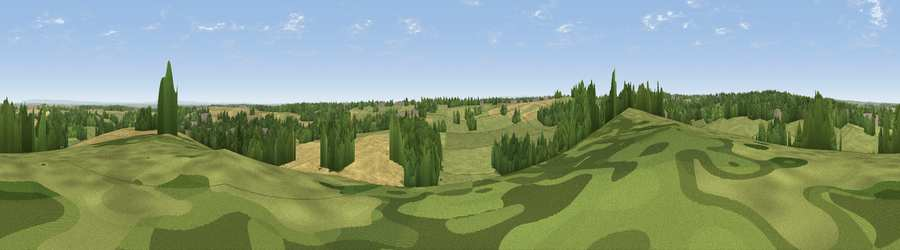

Viewpoint near Thorner
#21656 in England · top 30% of its area beats it · near ThornerThe view, rendered

A 360° render of this exact spot computed from the terrain model, tree cover and land cover — summer colours, afternoon light, calibrated against photographs of famous viewpoints. Real trees, hedges and buildings will differ in detail.
The panorama
Grey silhouette: terrain skyline in each direction (720 bearings, Earth curvature and refraction included). Dashed green: skyline with trees (+15 m) and buildings (+8 m) as obstacles. Blue strip: how far the ground is visible on each bearing.
Where the view opens
Wedge length = distance to the farthest visible ground on that bearing (vegetation-aware). Rings at 10, 25 and 50 km.
What fills the view
49% grassland · 25% cropland · 23% woodland · 3% built-up
Angular shares of the visible panorama (visual magnitude), not map area. Landscape diversity 0.49 (0–1 Shannon).
Key numbers
More beautiful places nearby
The staircase of upgrades: each row has a higher view potential than everything closer. Driving times are estimates from straight-line distance, calibrated against real road routing — check an actual route before setting out.
| Place | Direction | Drive | Score |
|---|---|---|---|
| Viewpoint near Shadwell | SW · 1 km | ~4 min | 53.8 |
| Viewpoint near Rigton Hill | NNE · 5 km | ~11 min | 55.3 |
| Viewpoint near Kirkby Overblow | NNW · 9 km | ~18 min | 63.5 |
| Viewpoint near Micklefield | SE · 11 km | ~21 min | 65.7 |
| Viewpoint near North Rigton | NW · 13 km | ~24 min | 66.6 |
| Rawdon Trig point | W · 15 km | ~26 min | 69.6 |
| Rawdon Billing | W · 15 km | ~27 min | 73.0 |
| Viewpoint near Otley | WNW · 17 km | ~30 min | 77.5 |
53.85740, -1.44238 · source: screening · position refined by local search. Computed location — check access rights before visiting.